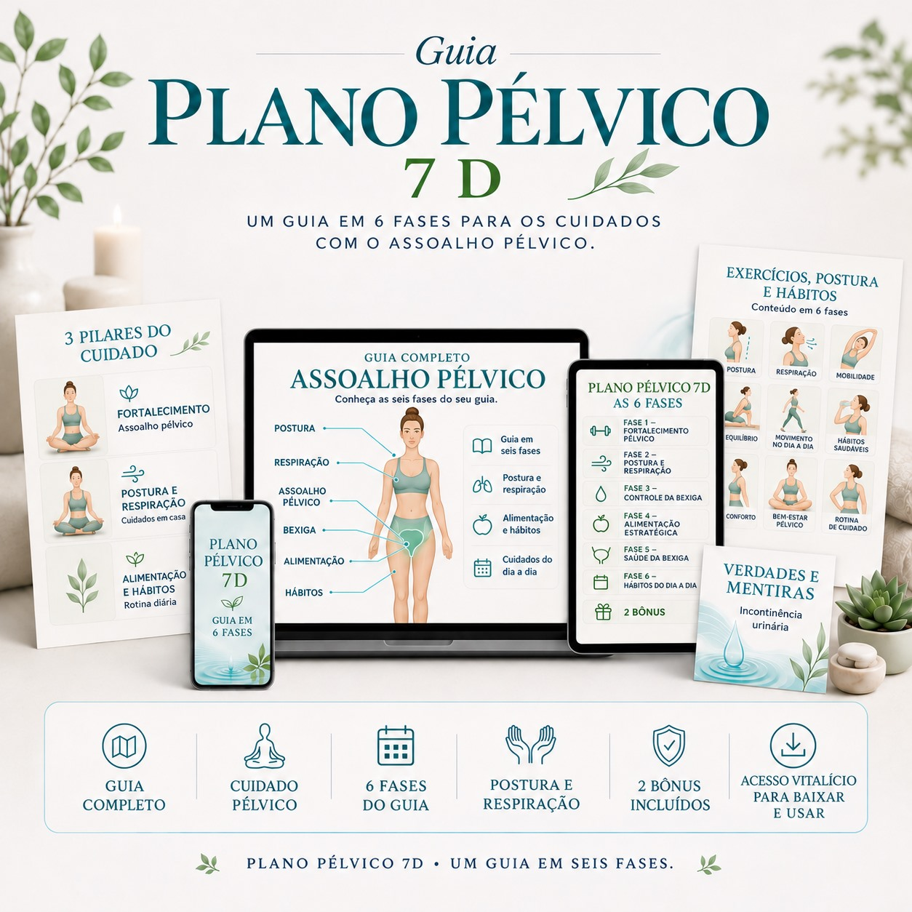
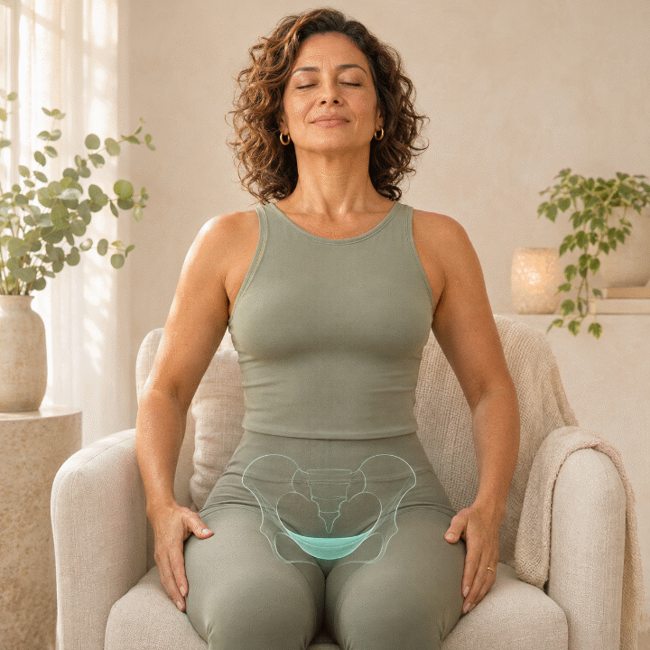

01
Sessão guiada
Sessão guiada de 10 min — siga as orientações da sessão.

Vídeo de apresentação em breve.
Para quem já calculou quantos minutos aguenta em pé até o próximo banheiro.
10 minutos por dia. No celular. Na sua casa. Sem equipamento, sem remédio, sem sair do quarto.
No navegador do celular
Garantia de 30 dias

O QUE ESTÁ INCLUÍDO
Sessão guiada de 10 min — siga as orientações da sessão.
Auto-teste de trilha — conheça a proposta de fortalecer ou soltar antes de começar.
Reflexo anti-escape — pratique a contração antes da tosse.
Progressão semana a semana — avance conforme a fase do treino.
Caderno de receitas naturais — sugestões para uma rotina de alimentação.
Diário de controle e manutenção de 5 min — acompanhe a rotina.
Sessão guiada
Auto-teste de trilha
Reflexo anti-escape
Progressão
Caderno de receitas
Diário e manutenção
TALVEZ VOCÊ SE IDENTIFIQUE
Meio segundo de congelamento.
A mão que desce discreta pra barra da blusa.
E o inventário mental mais humilhante do seu dia: foi pouco? deu pra disfarçar? alguém viu? tá com cheiro?
O pior não é o escape. É o que vem depois do escape.
Você já fez isso?
Calça preta. Sempre preta — porque preto esconde. Absorvente “por segurança”, mesmo nos dias bons.
Mapa de banheiros em todo lugar novo. “Xixi de garantia” antes de sair de casa.
Corto a água depois das 15h. “Hoje não, meu amor” — quando a verdade é medo.
Corto a risada no meio e travo as pernas.
Travo o corpo na intimidade e finjo que não é nada.
Se você marcou 3 ou mais mentalmente, continue lendo.
Isso não é “coisa da idade”. É músculo destreinado — e músculo se treina.
Ilustração conceitual
ENTENDA O MÉTODO
Uma rede de músculo, esticada de um osso ao outro da bacia, segurando bexiga, útero e intestino. Ela ajuda a fechar a saída da urina.
Quando você tosse, ri ou pula, a pressão na barriga aumenta.
Rede firme: fecha a tempo.
Rede frouxa: pode ocorrer um escape.
“Depois de filho é assim mesmo.” “É da idade.” “Acostuma.” “Minha mãe tem há 20 anos.”
Comum não é normal. E “normal” não significa “sem solução”.
O que pode afetar o assoalho pélvico:
Você aprendeu a dirigir, a cozinhar, a usar celular. Ninguém te ensinou a treinar o assoalho pélvico.
Músculo destreinado se treina. Aos 42. Aos 58. Aos 67.
O treinamento da musculatura do assoalho pélvico é uma das primeiras abordagens recomendadas para perda de urina ao esforço.
A orientação profissional pode ajudar a escolher os exercícios adequados.
Escapes ao tossir
Escapes ao espirrar
Escapes ao pular
UMA NOVA POSSIBILIDADE
Mais um ano de calça preta.
Mais um ano de mapa de banheiros.
Mais um “hoje não, meu amor”.
Mais um ano gastando com absorventes.
Alguém conta uma piada na cozinha. Você ri de barriga, ri até lacrimejar — e não pensa em nada.
Seu filho grita “pula!” e você pula. A bolsa sai leve: sem absorvente, sem calcinha extra, sem plano de fuga.
Você não está pedindo luxo. Está pedindo para rir sem medo.
É por isso que vale a pena começar.
TREINO GUIADO
PILAR 1
Auto-teste de 3 minutos para conhecer sua trilha: fortalecer ou soltar e reorganizar. Depois, aprenda a ativar o músculo certo.
PILAR 2
Pratique a contração antes da tosse, do espirro, da risada ou do pulo.
PILAR 3
As receitas acompanham a rotina de treino. Comida não fortalece músculo. Treino fortalece músculo.
PASSO A PASSO
Você segue a sessão do dia, passo a passo.
Dias 1–14 — conheça a trilha e pratique a ativação.
Dias 1–14 — identifique o movimento da musculatura.
Semanas 3–6 — progrida com as sessões.
Semanas 3–6 — pratique a contração antecipada.
Semanas 7–12 — leve o treino para a rotina em pé.
Semanas 7–12 — pratique em situações do dia a dia.
PARA ACOMPANHAR O SEU GUIA
Caderno de Receitas Naturais, Guia Intestino Destravado e Manual da Bexiga Calma.
SOS Situações Reais e Diário de Controle de 90 dias.
Imagens e mockups são representações ilustrativas.
OLHE ALÉM DOS PRODUTOS
Você não falhou. Faltou estrutura.
O que pode interferir no treino:
Ativação
Progressão
Coordenação
Relaxamento
Consistência
Um treino começa por entender o que o seu corpo precisa.
Confira os quatro erros mais comuns:
Músculo errado. Você empurra para baixo ou trava glúteo e barriga achando que é a pélvis.
Sem progressão. Repetir sempre o mesmo exercício deixa de desafiar o músculo.
Sem reflexo. A contração precisa chegar a tempo da tosse ou do espirro.
Pélvis tensa ≠ pélvis forte. Quando o assoalho está tenso demais, apertar mais pode piorar os sintomas.
Você fez o certo com o que sabia.
O que faltou foi alguém te dizendo qual músculo, quanto, em que ordem, semana por semana.
Quero conhecer o protocolo →O DIFERENCIAL DO GUIA
Os resultados variam de pessoa para pessoa.
Treino guiado, progressivo, 10 minutos por dia.
O protocolo propõe 8 a 12 semanas de prática consistente. O ritmo das mudanças varia.
Material educativo. Não substitui avaliação, diagnóstico ou acompanhamento de um profissional de saúde. Resultados individuais podem variar.
Depoimentos em breve.
SEU GUIA COMPLETO
Método Pélvis Firme™ — sistema de 12 semanas com sessões de 10 minutos por dia.
Auto-teste de trilha, três fases de sessões guiadas e protocolo do reflexo anti-escape.
Caderno de Receitas Naturais, Guia Intestino Destravado e Manual da Bexiga Calma.
SOS Situações Reais, Diário de Controle de 90 dias, manutenção de 5 minutos e acesso vitalício.
R$ 29,90 à vista
ou 6x de R$ 4,98
Checkout em breve.
R$ 35 por mês em absorventes durante 5 anos somam R$ 2.100.
E isso é só o absorvente. Sem contar a calça que você não compra, o passeio que você recusa, a aula que você trocou.
O absorvente ajuda a lidar com os escapes. O treino trabalha o controle do assoalho pélvico.
Calculadora interativa em breve.
30 dias de garantia incondicional.
Entra, faz o auto-teste, executa as sessões, cozinha as receitas.
Se achar que não é pra você, solicite a devolução integral ao suporte.
CUIDADO ANTES DE COMEÇAR
Se você está grávida ou no pós-parto recente, procure liberação médica.
Se teve cirurgia pélvica recente ou tem prolapso, procure liberação médica.
O método pede cerca de 10 minutos de prática por dia.
É uma proposta de treino guiado em casa.
Converse com um profissional de saúde se tiver dúvidas.
Sangue na urina, dor ou ardência ao urinar ou febre.
Perda de urina sem esforço ou perda de controle intestinal.
Início súbito dos sintomas.
Orientações educativas para uma rotina de treino.
Acompanhamento da rotina com um diário de controle.
O material é educativo e complementar.
Resultados variam de pessoa para pessoa.
DÚVIDAS FREQUENTES
É possível treinar o assoalho pélvico depois da menopausa. O ritmo do progresso varia.
O método trabalha ativação, progressão e coordenação. Uma avaliação profissional pode ajudar a entender por que os exercícios anteriores não deram resultado.
A gravidez e o parto podem afetar o assoalho pélvico. Se estiver gestante ou no pós-parto recente, peça liberação médica antes de começar.
São 10 minutos por dia. Você pode escolher um horário que caiba na sua rotina.
Não. A proposta é usar o próprio corpo e o celular.
O programa se estende por 12 semanas. O tempo para perceber mudanças varia de pessoa para pessoa.
Não. É um material educativo e complementar. Procure avaliação se tiver sintomas ou dúvidas.
São 30 dias de garantia incondicional. Solicite a devolução integral ao suporte.
PÉLVIS FIRME
Você não está pedindo luxo. Está pedindo para rir sem medo.
Comece com 10 minutos por dia, em casa.
ou 6x de R$ 4,98
Acesso pelo navegador no celular.
30 dias de garantia com devolução integral.